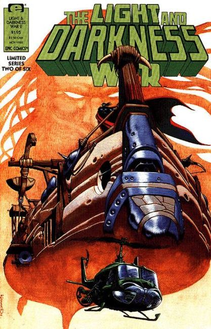
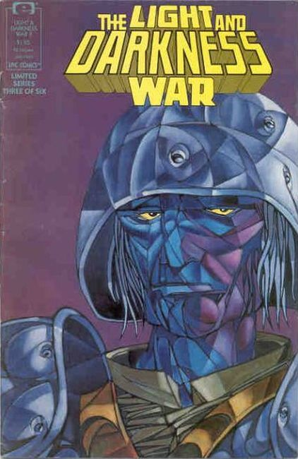
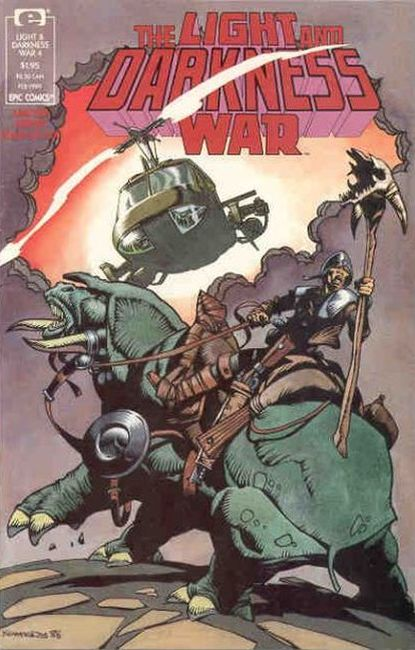
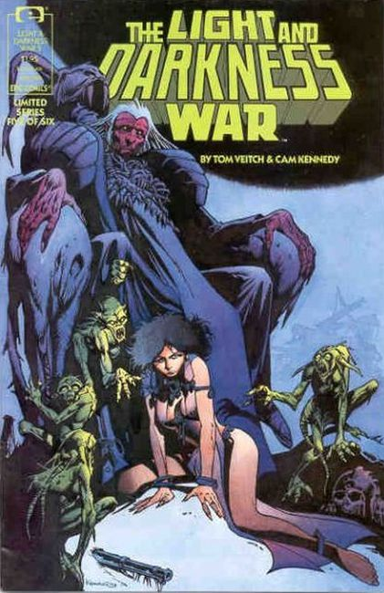
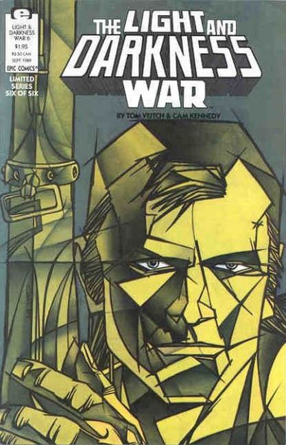

Vietnam veteran Lazarus Jones is reunited with his friends Eagle, Huff & Slaw at the edge of the Outer Darkness in the Abraxas star system to fight a new war.

Lord Na's plan to subjugate the galaxy of light includes traveling through the dimensions...and procuring weapons from Earth!

Nicholas Tesla uses the mental television device to communicate across dimensions with his uncle, while Laz and the gang take an unexpected trip.

Nicholas Tesla meets with Lord Na, even as his uncle Nikola has an encounter with Leonardo da Vinci, while Laz and the gang make their way back with some surprises in store for Na

Laz tries to adjust to his life back on Earth, while Nikola Tesla delivers his weapon of war.

Laz must create a new light body for himself in order to help out in the final war effort.